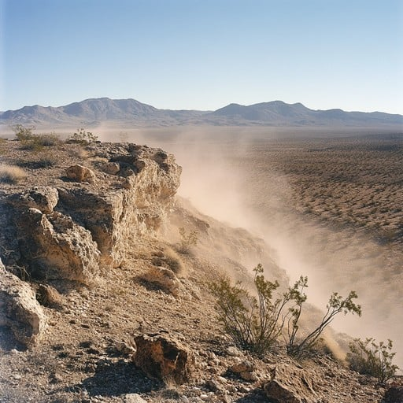
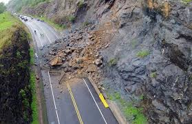
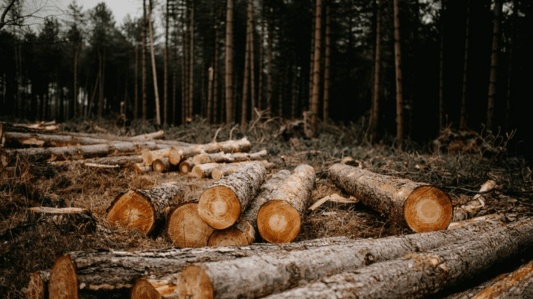
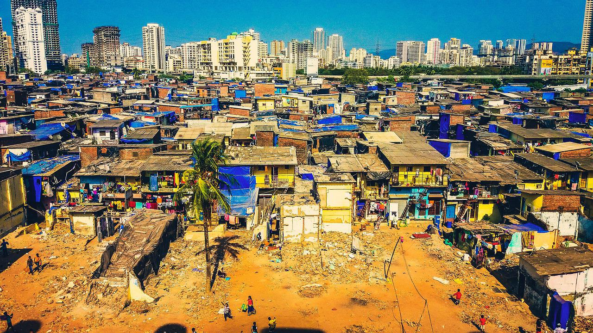
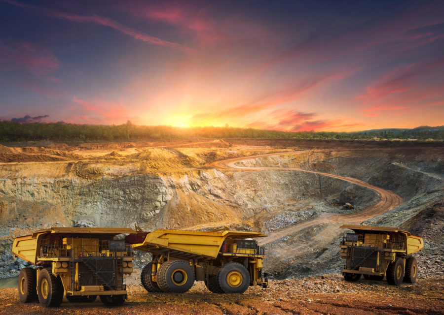
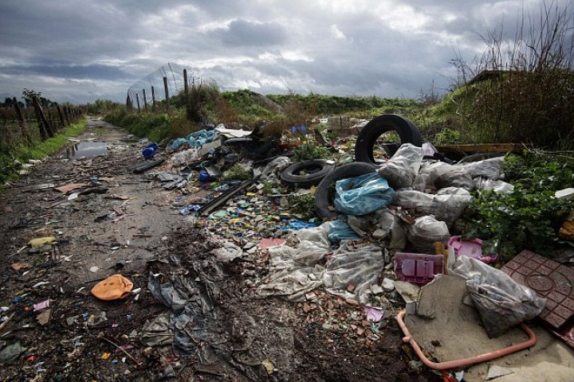
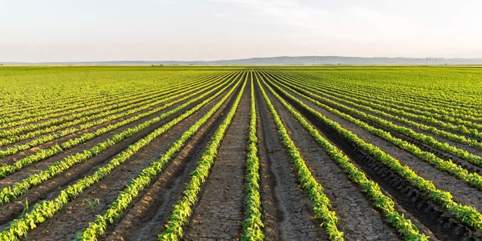
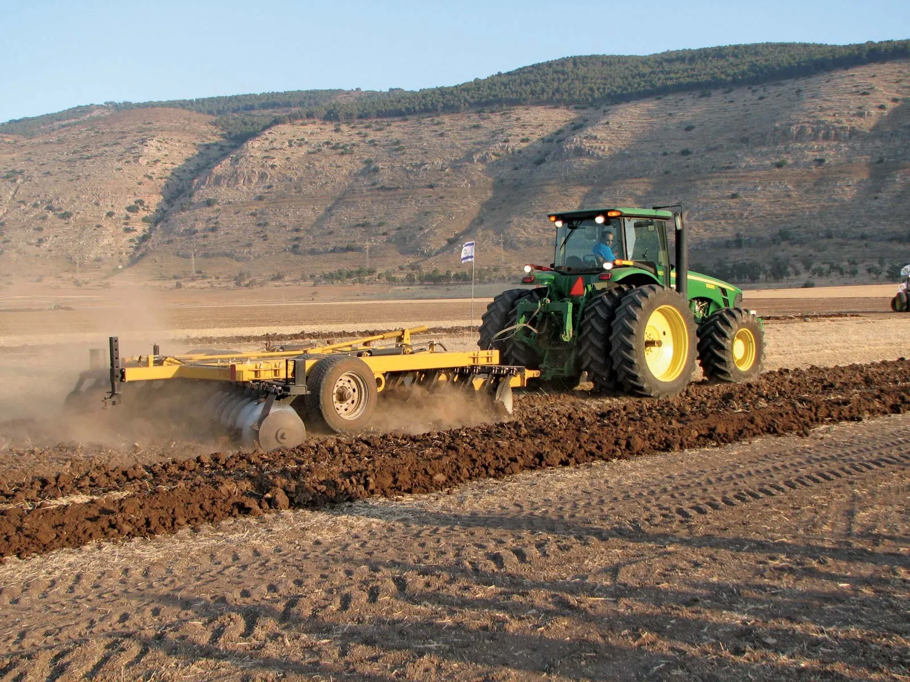
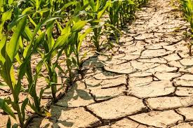

The degradation of our planet's precious soil resources begins with understanding the underlying causes of soil erosion, which threaten agricultural productivity, water quality, and biodiversity.
Natural Causes

Rainfall and Runoff: Heavy rainfall can dislodge soil particles, leading to erosion. Example: Flash flooding in Utah, USA, caused significant soil erosion in 2018.

Wind: Strong winds can transport soil particles, especially in arid regions. Example: Dust storms in Australia's Outback cause massive soil erosion.

Gravity: Slope instability and landslides can occur due to gravity. Example: Landslides in Nepal's Himalayas caused by heavy rainfall and gravity.

Rivers and Streams: Water flow can erode soil along riverbanks. Example: River Ganges' erosion in India affects agricultural land.
Human Causes

Deforestation: Removal of vegetation leads to soil exposure. Example: Amazon rainforest deforestation contributes to soil erosion.

Overgrazing: Excessive livestock grazing damages soil structure. Example: Overgrazing in Africa's Savannas causes soil degradation.

Agricultural Practices: Poor farming methods, such as monoculture and intensive tillage. Example: Intensive farming in the American Midwest leads to soil erosion.

Urbanization: Construction and development increase soil disturbance. Example: Soil erosion in urban areas like Los Angeles due to construction.

Mining: Soil removal and alteration due to mining activities. Example: Soil erosion in coal mining areas of Appalachia, USA.

Pollution: Chemical pollutants damage soil health. Example: Soil contamination from industrial waste in Bhopal, India.
Agricultural Causes

Monoculture: Planting single crops depletes soil nutrients. Example: Corn monoculture in Iowa, USA, leads to soil degradation.

Intensive Tillage: Frequent plowing disrupts soil structure. Example: Intensive tillage in wheat fields of Punjab, India.

Inadequate Irrigation: Poor water management causes soil salinization. Example: Soil salinization in California's Central Valley due to irrigation.